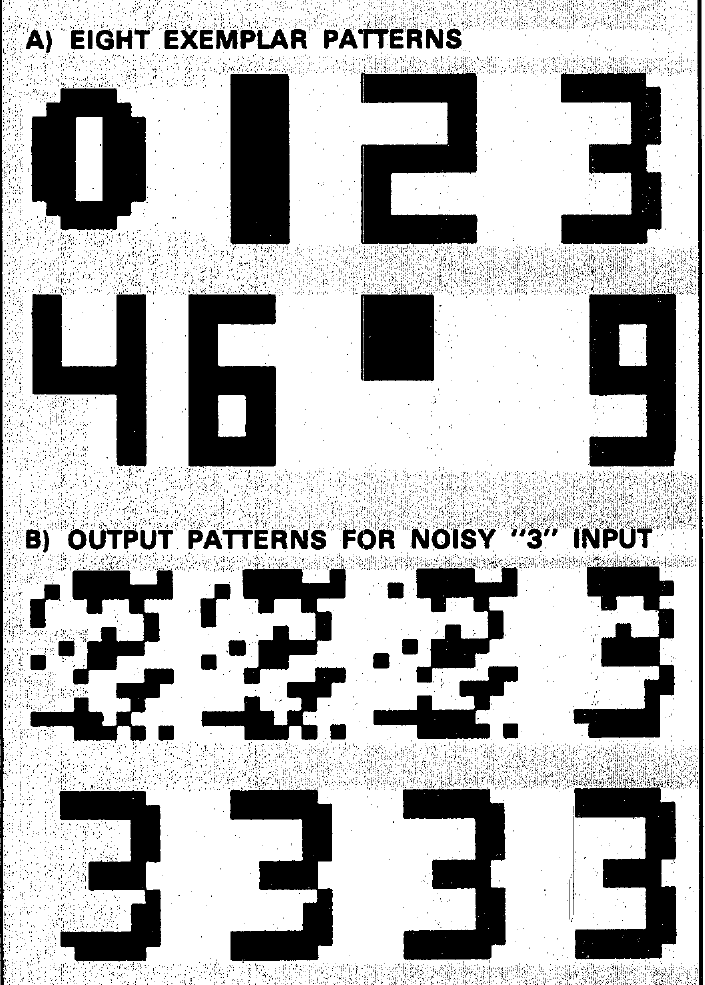

开始学习：怎样让一个网络“想起”完整模式？
看到一个被噪声破坏的数字 3，怎样让网络自己修正像素，而不是给它一个地址去查表？
本周的答案是：把记忆写进连接权重，再让状态反复更新。一个好的记忆应当像一个可以停住的状态；它附近的含噪状态沿更新规则走来，也应当停在这里。Discrete Hopfield network（离散 Hopfield 网络）用一组互相反馈的二值节点实现这个想法；Bidirectional Associative Memory（双向联想记忆，BAM）进一步把“图像找图像”扩展成“图像找标签、标签找图像”。
- 把一个小模式编码成双极性向量，辨认权重、状态、局部场和偏置的不同角色。
- 手算外积权重，按指定顺序做异步检索，并逐步核对能量。
- 推导单节点更新的能量差，说明对称、零对角、更新方式与零输入约定为什么重要。
- 用吸引盆地解释成功恢复、误恢复和伪稳定状态，正确理解容量说法的条件。
- 构造小型 BAM，检查矩阵维度，完成双向回忆，并判断串扰是否会改变输出符号。
阅读顺序建议沿目录从前到后。第 1 章是够用的先修补充，不要求你持有前几周教材。完整示范均直接展开；练习答案可点击查看。本教材的公式使用内嵌 MathML，图像内嵌，正文和计算无需联网。窄屏下，较宽公式、表格和示意图可在各自区域左右滑动查看。
主范围为 Lecture_slides_full semester.pdf，PDF 实际页序 178–201，包含起止页；页序从 PDF 第一页算起，不采用页脚幻灯片编号。补充采用 ASSPM-Lippmann1987.pdf，实际页 4–5的 Hopfield 部分。连续时间动力学、电路实现、TSP 完整建模及 Hamming Net 均不展开。
“原资料”表示有相邻来源定位；“教学补充”表示为补足理解而加入的推导、例子或示意图；“核实纠正”表示已回看原页并用定义、代数或原始研究核验。重要性按本周学习依赖评级，不代表考试概率。
评级：★★★★★ 5/5 核心基础；★★★★☆ 4/5 重要方法；★★★☆☆ 3/5 理解支撑；★★☆☆☆ 2/5 局部拓展；★☆☆☆☆ 1/5 背景补充。每块另说明具体理由。
1 必要前置：把模式变成能计算的对象
1.1 Binary / bipolar encoding（二值／双极性编码）
一幅黑白图可按固定顺序展开成向量：例如逐行读取每一个像素。每个位置必须始终代表同一个像素，否则权重里学到的关系就错位了。Binary encoding（二值编码）常用 0 和 1；本周主要使用 Bipolar encoding（双极性编码），用 −1 和 +1 表示两种状态。这里的“二值”泛指只有两个可能值，并不一定专指 0/1。
这里 是第 个二进制位， 是同一位的双极性编码，都是无量纲数。于是 对应 。本教材约定黑像素为 +1、白像素为 −1，与 Lippmann 的数字例一致；反过来编码也可以，但训练与检索必须一致。
双极性的一个便利是：相同符号的乘积为 +1，不同符号的乘积为 −1；并且每个分量的平方都等于 1。这两个事实后面分别用于“记住节点间的一致关系”和“去掉自连接”。把 0/1 数据直接代入双极性公式，不能期待得到相同网络；编码变化通常也需要相应改变权重和阈值。
前置补充；依据：Lecture_slides_full semester.pdf，实际页 178、181、194；ASSPM-Lippmann1987.pdf，实际页 5 数字实验的编码说明。
1.2 Transpose / inner product / outer product（转置／内积／外积）
本教材默认向量是列向量。 表示它有 个实数分量，即 ；上标 表示 Transpose（转置），把行和列互换，所以 是 。先看维度，再计算，可避免把两个意义完全不同的乘法混在一起。
Inner product（内积） 的输入必须等长，结果是一个标量。它把“对应位置相乘”的结果加起来。对双极性向量，相同位置贡献 +1，不同位置贡献 −1，因此可以衡量相似程度；但它不等于检索动力学的保证。
Outer product（外积） 中，若 ，结果是 矩阵，第 项为 。它没有先求和，而是保留“每个位置与每个位置”的配对关系。上式 的每一行，是用 乘整行 。这正适合用来生成节点之间的权重。
令 。内积为 ，只给出一个总相似分数；外积为下列 矩阵，各项保留两位置间的配对。
它不必对称：第一行第二列为 +1，第二行第一列为 −1。以后 BAM 的两个向量来自不同层，权重就是这种一般外积。
前置补充；为理解 Lecture_slides_full semester.pdf，实际页 194–195、201 所需，示例可直接逐项复算。
1.3 Symmetric matrix / quadratic form（对称矩阵／二次型）
Symmetric matrix（对称矩阵）满足 ，也就是 。它要求两个方向权重相同，不要求所有权重都相同，也不要求它们为正。 是对角项，代表节点对自身的影响；本周标准 Hopfield 取 。
右式是 Quadratic form（二次型）： 为 ， 为 ， 为 ，结果是一个标量。每一项含两个状态分量的乘积。若对称且零对角，节点 1、2 的相互作用既在 中出现，也在 中出现，因此双重求和把每对节点算了两次。
此等式只在本节的对称、零对角条件下使用。以 为例，三对贡献是 ，合计 0；直接算 ，也得 。
前置补充；对应 Lecture_slides_full semester.pdf，实际页 182–184、198。
若 ，、 各多大？哪个可以左乘 得到二维向量？
查看讲解答案
为 ， 为 。前者能作用于 ：。后者不能直接左乘四维的 ，因为内侧维度 2 和 4 不相等。这就是后面 BAM 需要 与 两个方向的原因。
现在我们有了描述一个状态及其相互作用的语言。下一步先把网络“运行”起来，再问它为什么会停。
2 Discrete Hopfield network（离散 Hopfield 网络）：状态怎样更新？
2.1 Recurrent network（循环网络）与 State（状态）
Feedforward network（前馈网络）把信号沿层次向前传；Recurrent network（循环网络）把输出反馈到网络内部，当前输出会影响下一次输出。Hopfield 是单层循环网络：没有一条“从隐藏层走到输出层就完成”的固定路径，而是同一组节点反复修正状态。课件以 John Hopfield 的 1982 年论文作为这一模型的重要历史入口。
设网络有 个节点，整个时刻的输出为 。这就是 State（状态）。 在本教材表示离散更新步，不是物理秒。权重矩阵 在一次检索中保持不变；变化的是 。
图中的一条边连接节点 1 和 2：计算节点 1 时用到 ，计算节点 2 时用到 。两个权重相等时，它们表达同一对关系。状态可能多次改变，但这些连接在回忆期间不重新学习。
原资料：Lecture_slides_full semester.pdf，实际页 178–180；course_files_export/Tutorials/Tutorial 1.pdf，实际页 17。循环／前馈对比为必要回顾。
2.2 Local field（局部场）、Bias（偏置）与 Threshold（阈值）
一个节点先看其他节点的“意见”：把每个状态乘以相应权重后加起来。再加上固定的偏置，得到 Local field（局部场）。我们用 表示固定偏置，以免和后面 BAM 的模式 混淆。
是一个实数，； 是从节点 到节点 的权重。这里没有指定物理量纲，能量也只是数学评分。若写成阈值形式 ，则 。正偏置推动节点取 +1，正阈值则让取 +1 更难。
实际页 181 写 。教材的 对应该页的 ，教材的 对应该页固定输入 。把线索装入初态 ，与在每一步持续加偏置 ，是两种不同操作。后面的外积联想例题取 ，让含噪线索只作为初态。
在 Sign activation（符号激活）下，正场选 +1、负场选 −1。但数学常见定义 会使状态离开双极性集合。本教材明确采用 Zero-field hold（零场保持）：局部场等于零时保持原状态。
这个约定不仅为了计算完整，还让后面的严格下降证明更清楚：零场不触发无意义的来回翻转。凡本教材简写 时，非零处按通常定义；遇到零，按此保持规则处理，或在需要初始化某层时明确指出必须先给该层一个状态。
若 ，而 ，则 ，所以更新节点 1 后得 −1。负权重并非永远产生负贡献：它乘上负状态会给出正贡献。它表达的是两个节点偏向取相反符号。
原资料：Lecture_slides_full semester.pdf，实际页 181–184；阈值回顾：course_files_export/TLU.pdf，实际页 1–2。零场保持与符号重命名为教学补充，课件未明确零场约定。
2.3 Asynchronous / synchronous update（异步／同步更新）
Asynchronous update（异步更新）每一步只改一个节点，其他节点原样保留。下一节点计算时，立即使用已经更新的最新状态。一个常见顺序是 轮流更新，走完称为一次 Sweep（完整扫描）。也可以随机选择，但要避免永久忽略某个节点；循环扫描提供了最容易检查的公平访问方式。
Synchronous update（同步更新）则先用同一个旧向量计算所有局部场，暂存结果，最后一起替换整个状态。不能一边计算一边写回却仍称其同步。课件的向量公式描述局部场计算；它本身并不能替你决定使用哪一种调度。
| 条件 | 异步：先节点 1，再节点 2 | 同步：一起更新 |
|---|---|---|
| ，，初态 | 节点 1 看到 −1，先变为 ；节点 2 再看到新的 −1，保持 −1。 | 两个节点都看旧状态：节点 1 变 −1，节点 2 变 +1，得到 。 |
异步例中的第二个节点不是继续读取旧的 +1。这一个细节，决定后面的能量论证能否成立。实现停止条件时，也不能“某一个节点没改就停”：应该完成一次所有节点都被检查且没有变化的扫描。
原资料：Lecture_slides_full semester.pdf，实际页 183–184；扫描、调度公平性、停止判据与小例子为教学补充。
我们已经能逐步执行网络。现在的问题是：状态会不会永远变化？能量给出一条可验证的答案。
3 Energy function（能量函数）：为什么异步更新会停？
3.1 用一个数评价整个状态
观察一个节点很容易，观察 个节点互相反馈就难了。我们希望给每个完整状态一个分数，并证明每次有效更新都把分数降低。这样的标量函数是分析工具，不要求真的有一个物理装置测量它。这里选择：
是当前能量，，，。本式右侧按无序节点对求和的写法，使用了 。 在检索中固定。因 把每对关系算了两次，左式乘 ；负号使“符合权重倾向”的状态能量较低。
例如 时，相同符号令该对贡献 ，相反符号则贡献 +2，所以网络偏好相同。若 ，偏好恰好相反。若 ，偏置项 在 时较小。因此每个节点根据局部场选符号，可以理解成在其他节点不动的前提下，选一个更有利的状态。
能量可以为负；我们关心的是前后比较。它不直接数有多少像素错误，也不直接告诉我们哪个模式是“正确答案”。网络完全可能降低能量，却走向一个错误记忆或未存储的稳定状态。能量证明负责解释“停下来”，记忆设计还要解释“停在哪里”。
原资料：Lecture_slides_full semester.pdf，实际页 182、198；逐项解释及评分直觉为教学补充。
3.2 单节点更新的 Energy difference（能量差）推导
固定一个时刻，只有节点 更新。记旧状态为 ，新状态为 ，令 ，它只能是 −2、0 或 +2。令 为第 个位置为 1、其他位置为 0 的单位列向量；于是 。先展开能量，暂时保留所有项：
为什么只剩这些？旧的二次项 和旧的偏置项 在相减时抵消；交叉项有两个，表示“改变第一个因子”和“改变第二个因子”；最后还有两个变化因子相乘的一项。此时还不能直接说能量下降。
现在使用两个条件：对称性使 ；零对角使 。因此：
这里 是更新前由当前状态计算的场。若 ，新状态为 +1；旧状态本来就是 +1 时 ，能量不变；旧状态是 −1 时 ，。若 ，发生翻转时 ，所以 。若 ，本教材保持旧状态，能量不变。
因此我们证明的是每一步能量不增加，每次实际翻转严格下降，不是每做一次检查能量就必定严格变小。这个区别对停止条件和零场处理很重要。
一个节点旧值为 +1，当前场为 −3。更新后为 −1，故 。公式给出 。容易犯的错误是把状态变化写成 −1；从 +1 到 −1 的变化量实际是 −2。
原资料：Lecture_slides_full semester.pdf，实际页 182–183。以上按同一能量函数补全矩阵展开，明确了原页省略的中间步骤与零场约定。
3.3 Fixed point（不动点）、收敛与条件边界
网络只有 个可能状态。若每次实际变化都严格降低固定的能量，就不可能再回到曾经出现的状态；有限个状态也不允许无限次严格下降的变化。使用循环扫描，最后必会遇到一次全扫描没有节点改变；此时每个节点都与其局部场相容，达到 Fixed point（不动点）。
第一个不等式表示非零场与状态同号，零场则由保持规则留下。第二个式子是在当前状态强行翻转第 位的能量变化，因为此时 。所以不动点是相对于“一次翻一位”的弱局部最小值；若所有 ，就是严格的单比特局部最小值。它未必是所有 个状态中的全局最小值，也未必是想找的记忆。
| 条件 | 它在证明中做了什么 |
|---|---|
| 把来自两个方向的交叉项合并成节点实际使用的局部场。 | |
| 消除展开中的自相互作用修正项，局部场只反映其他节点及偏置。 | |
| 一次只更新一位 | 没有两个不同节点同时变化产生的额外交叉项。 |
| 固定，状态为 ±1 | 比较的是同一个函数在有限状态集上的值。 |
| 零场保持；公平访问所有节点 | 零场不任意翻转；也不会因永远不访问某个不稳定节点而误判完成。 |
这些是本教材采用的一组充分条件：满足它们就能使用该证明；不满足不代表每一个网络都一定发散，而是不能照搬这条结论。
双极性下 ，所以能量中的对角贡献确实是常数。但若更新规则仍把 算入场，状态决定就改变了。对称但非零对角时，完整展开含 ；不能丢掉它却继续用包含自连接的 。
教学反例：只有一个节点，。若按包含自连接的场更新，+1 下一步变 −1，−1 下一步又变 +1，永不停止；但能量 始终不变。教材统一先将对角置零，避免这一混淆。
原资料：Lecture_slides_full semester.pdf，实际页 183–184。有限状态论证、单比特局部最小解释、零场与公平性补足、自连接反例为教学补充。
3.4 Synchronous two-cycle（同步二周期）反例
继续使用第 2 章的两节点网络，、。它完全对称且零对角。同步更新让每个节点复制另一个节点的旧值：
能量为 ，两个状态的能量都等于 +1。它们不断互换，构成 Two-cycle（二周期）。异步先更新节点 1 则到 ，能量变为 −1；若先更新节点 2 则到 ，也是 −1。可见调度不仅影响是否收敛，也可能影响最终选择哪个吸引子。
从代数看，同时变化时设 ，有：
此式使用对称性，但允许多位变化。第二项一般不为零；单节点零对角更新时它才消失。所以不能把每个节点“单独更新会下降”的计算简单相加，来证明同时更新也下降。本例中 ，第一项为 −4，第二项为 +4，恰好抵消。
课件第 184 页列出的经典同步结论是稳定点或二周期；这里用无零场的小例子说明二周期确实可能出现，不展开更一般的周期定理。即使能量有下界，只有“不增加”而没有排除等能循环，也不能单独证明状态收敛。
原资料：Lecture_slides_full semester.pdf，实际页 184；反例及多节点能量差为教学补充。
“权重对称，所以把所有节点并行更新，能量必然每步下降并收敛。”这句话哪里有问题？若某次异步检查的局部场为零，教材规定怎样做？
查看讲解答案
对称性只是条件之一。上述单节点证明还使用零对角、固定参数和异步更新；同时更新会多出 。两节点反例已经否定该说法。即使采用异步，也只能说每次实际翻转严格下降，未翻转的检查能量不变。场为零时保持原状态；不能用通常返回 0 的符号函数把节点变成 0。
能量解释了网络为什么可能停。要让停止状态有意义，需要把希望记住的模式写进权重。
4 Associative memory（联想记忆）：记住的究竟是什么？
4.1 Content-addressable memory（内容寻址记忆）
传统按地址访问的记忆像“告诉我第 25 号格子里是什么”。联想记忆则像“我记得这幅图的一部分，帮我补全”。Prototype pattern（原型模式）是希望存储的完整模式；Probe / cue（探针／线索）是检索时提供的信息，可以是该模式的含噪版本。网络根据内容启动演化，最后的平衡状态应代表一个原型。
这里的容错不是随意猜测：线索必须落在某个合适的吸引范围内，而且权重得使目标模式稳定。课件用“鲁棒、容错”的人类联想直觉引出任务；在人工网络中，这是一项目标，不能无条件宣称已经实现。
如果线索只有部分像素已知，本周的纯 ±1 网络仍需给所有分量一个初值。可以先猜测未知位，再检索；若要在检索中把已知位固定不变，这是额外的夹持策略，必须重新说明规则。本教材手算使用“所有位置都有值、其中一些值错误”的线索，避免把未知位 0 和合法状态混在一起。
原资料：Lecture_slides_full semester.pdf，实际页 185–186、188–189；不完整线索的编码边界为教学补充。
4.2 Biological inspiration（生物学启发）的角色
实际页 187 的脑功能示意图标注了视觉、语言、规划、记忆等功能，并注明部分与记忆有关的位置不可直接看见。这幅图在本周的作用是提醒我们：记忆与信息关联是智能的重要能力。它不是 Hopfield 节点与脑区的一一映射，也不能用它证明对称权重或能量公式在真实大脑中成立。后续数学结论来自模型定义与推导。
原资料：Lecture_slides_full semester.pdf，实际页 187；图署名 FRONTIER / Prince of Wales Medical Research Institute。此处只解释其教学作用，不展开神经解剖学。
4.3 Auto-association / hetero-association（自联想／异联想）
Auto-associative memory（自联想记忆）把一个模式与它本身关联：含噪数字 3 → 完整数字 3。输出与线索处在同一表示空间，但并非要原封不动复制含噪输入。Hetero-associative memory（异联想记忆）把两个通常内容或格式不同的模式关联：人物照片 → 人名编码；两侧向量长度可以不同，也可以恰好相同。
课件第 191 页用 ID → Name 和受损字母 → 完整字母作对比；第 192 页把人物图像和名字并列，并用模式矩阵表示多组输入—期望输出。矩阵中的一列是一组模式，不同列表示不同样本，不能把列号误看成像素位置。异联想这一任务可以由前馈网络或循环网络实现；BAM 是本周研究的一种双向循环实现，不是所有异联想方法的总称。
原资料：Lecture_slides_full semester.pdf，实际页 190–192。图为教学重绘。
4.4 Storage / retrieval（存储／检索）：两个阶段，不是两套记忆
Storage（存储）又称信息编码：给定原型集合，构造一张权重矩阵，使原型尽可能成为稳定状态。Retrieval（检索）又称回忆或信息解码：保持这张权重矩阵不动，把线索写进当前状态，然后运行更新规则。网络中没有“一号节点专门记模式 1”的规定；多组模式的关系叠加在同一组连接中。
| 阶段 | 已知输入 | 改变的对象 | 希望得到 |
|---|---|---|---|
| Storage | 完整原型 | 权重 | 把原型嵌入网络动力学 |
| Retrieval | 一个线索 | 状态 | 与线索关联的稳定模式 |
Lippmann 的 Box 1 把流程分为设置权重、用未知模式初始化、迭代到稳定、再对新线索重复。对新线索重复时，从初始化重新开始，不必重新用它训练。“存储后可长期使用”说的是权重保留的信息，并不保证所有原型永远都是正确稳定点；这一点需靠下一章的串扰分析来检查。
若把网络用作分类器，最后还可将稳定输出与存储原型逐一核对：完全匹配才返回对应类别；若收敛到未存储模式，可以输出“无匹配”。若它收敛到另一个已存储原型，则是误分类，不能靠“是否匹配某个原型”检测出来。
原资料：Lecture_slides_full semester.pdf，实际页 193；ASSPM-Lippmann1987.pdf，实际页 4–5 The Hopfield Net 与 Box 1。
任务和阶段已明确。接下来构造权重，并检查“写进去”为什么有时并不等于“能想起来”。
5 Outer-product learning（外积学习）：从原型到可回忆的网络
5.1 用成对关系写入权重
假设一个模式中，节点 1 和 2 都是 +1；希望检索时它们互相支持同号。若一个是 +1、另一个是 −1，就希望它们互相支持异号。乘积 恰好把这两种关系编码成 +1 和 −1。因此，对每个要存储的模式形成一次外积，再把各模式的贡献加在一起。
是原型数量， 是每个原型的长度，也是节点数；上标 是模式编号，不是幂。 为 ，每个外积及 都为 ； 是对角为 1、其他为 0 的单位矩阵。
为什么减 ？每个模式每个位置都满足 ，累加 个模式后对角元素正好是 。减去 才能全部置零；存了多个模式时只减一次 是不够的。每个自外积对称，所以求和后也对称。
这是一种 Hebbian outer-product rule（Hebb 型外积规则）：多次同号就加强正联系，多次异号就加强负联系，不同模式也可能相互抵消。资料采用未归一化求和。有些写法会再除以 ；在零偏置下，把全部权重乘同一个正常数不改变非零场的符号，因此不改变检索轨迹，但会缩放能量数值。有非零偏置时，不能只缩放 却默认网络不变。
原资料：Lecture_slides_full semester.pdf，实际页 194；ASSPM-Lippmann1987.pdf，实际页 5 Box 1 Step 1。Hebb 直觉与缩放条件为教学补充。
5.2 Cross-talk（串扰）：为什么写入不等于精确恢复？
先做一个比去噪更容易的检查：把完整的第 个原型 直接当初态，零偏置时它会保持原样吗？将它乘进权重：
第一行只是把括号换一种分组：外积先乘向量，等于列向量 乘一个内积标量。第二行单独抽出 的项。由于双极性原型有 ，它贡献 ，再与去对角项 合并，得到想要的信号项 。其余原型的加权叠加就是 Cross-talk（串扰）。
定义 ，其中 为第 位的串扰。要让每位输出仍是 ，最稳妥的是要求场严格同号：
这才是逐位可核查的严格恢复条件。 且 是一个较保守的充分条件；串扰不必恰好为零，只要不压过信号并翻转符号就可以。若等于零，结果依赖零场约定；在本教材中，从干净原型出发会保持，但对附近含噪线索的纠错余量可能为零。
实际页 195 说小扰动下仍可正确回忆。严格解释是：有些非正交模式集的串扰较小，仍形成有效吸引盆地。仅知道模式“不正交”，或仅知道噪声“很小”，都不足以保证成功；应检查局部场及实际动力学。如果原型本身都不稳定，就更不能宣称一定会恢复它。
原资料：Lecture_slides_full semester.pdf，实际页 194–195；逐坐标符号条件由原式直接推导。
5.3 Orthogonal / orthonormal（正交／标准正交）：第 195 页的核实纠正
Orthogonal（正交）指两个不同向量的内积为零；一组两两正交的向量满足 （）。Orthonormal（标准正交）还要求每个向量长度为 1。长度由 Euclidean norm（欧几里得范数）给出：
对未归一化的双极性向量，范数是 ，不是 1。因此实际页 195 把“不同模式内积为零”称为 orthonormal 不准确；本教材纠正为两两正交。该页写出的 本身是正确的，恰好也说明它们通常不是标准正交向量。
若两两正交，串扰消失，便有 。当 时，场与每一位原型严格同号，因此完整原型是严格稳定点。若 ，场为零；在零场保持约定下它不会动，但可能完全没有纠错能力，不能把 随意改成 并保留相同结论。
令 。内积为 ，而每个范数平方为 4。对 ，外积规则给：
两个完整原型都稳定。若确实想得到标准正交向量，应令 ，此时分量为 ±1/2，已不是原先的双极性状态。用 写权重时，零对角修正也应变成 ，不能继续原封不动减 。
核实纠正：Lecture_slides_full semester.pdf，实际页 195 原图中的 orthonormal、内积与范数式；依据正交／标准正交的定义及逐项复算。
5.4 完整教学示例：五节点网络的写入、含噪回忆与每步能量
已知：只存一个原型 ，取 。输入线索 ，第 1、3 位错误。按节点 1→2→3→4→5 循环异步更新，零场保持。要求：写出权重，算每次检查后的状态与能量，判断何时可以停止。
第一步：外积给关系，去掉自连接
例如 ，。每个对角元素原为 1，减去 后为 0：
矩阵是 ，且肉眼可检查对称、零对角。它只由原型构造，含噪线索不参与学习。
第二步：算初态能量，并准备一个复核捷径
本例只有一个模式，所以 。这里 是长度 5 向量的内积，。因此：
这个捷径仅适用于本例 ，不是所有 Hopfield 网络的通用能量式。初态内积为 ，故 。也可直接算 ，再用 核对。
第三步：顺序更新，立即使用最新状态
检查节点 1：，所以 −1→+1。现在状态为 。，能量差为 ，新能量为 −2。
检查节点 2 时必须读取新的 ，因此 ，状态 +1 保持。检查节点 3 时，，所以 +1→−1，，能量差 。
| 步骤 | 被查节点／场 | 旧值→新值 | 完整状态 | ||
|---|---|---|---|---|---|
| 初始 | — | — | −1, +1, +1, +1, −1 | — | 2 |
| 1 | 1／2 | −1→+1 | +1, +1, +1, +1, −1 | −4 | −2 |
| 2 | 2／2 | +1→+1 | +1, +1, +1, +1, −1 | 0 | −2 |
| 3 | 3／−4 | +1→−1 | +1, +1, −1, +1, −1 | −8 | −10 |
| 4 | 4／4 | +1→+1 | +1, +1, −1, +1, −1 | 0 | −10 |
| 5 | 5／−4 | −1→−1 | +1, +1, −1, +1, −1 | 0 | −10 |
第四步：确认停止，并解释结果
最终 ，，能量复核为 。所有场为 ，都和状态同号。因此下一整次扫描的 5 次检查均不改变状态，每步能量仍为 −10，此时可按算法停止。步骤 2 单次没有变化时不能提前停，因为步骤 3 仍有错误需要修正。
这里确实从两位错误恢复了原型，但不要从一个精心选择的单模式例子推断多模式网络也能纠正任意两位错误。多模式的串扰会改变整个状态流向。
教学补充：外积与更新依据 Lecture_slides_full semester.pdf，实际页 181–184、194；本例所有权重、局部场与能量均独立复算。
仍用例题 A 的 ，改用 。按 1→2→3→4→5 扫描，先算初态能量，再算前两次检查。提示：先算 ，别重新学习权重。
查看讲解答案
只有第 2 位错，，所以初态能量为 。节点 1 的场为 ，保持 +1，能量不变。节点 2 的场为 ，从 −1 变 +1，，状态变回 ，能量 −10。其余节点的场与状态同号，再完成无变化扫描即可停止。
存 ，使用零对角外积规则和零场保持。它们是否正交？网络能否把一个错误位改回来？
查看讲解答案
内积 ，二者正交；两外积相加为 ，扣去 后 。每个状态的场都为零，所有初态都原样保留。干净原型是固定点，但任何错误也不会被纠正。这个例子说明“原型保持”与“附近有纠错吸引盆地”不是同一要求。
小例题给出了完整的成功回忆。接下来用同样的机制解释失败，理解为什么容量不能只背一个数字。
6 从数字恢复到容量限制：网络会走进哪个记忆？
6.1 Attractor / basin of attraction（吸引子／吸引盆地）
Attractor（吸引子）是状态演化趋向的对象；在本周标准异步网络中，我们关心稳定点吸引子。固定更新规则后，最终流向同一个稳定点的所有初态构成它的 Basin of attraction（吸引盆地）。若用随机调度，某个线索还可能以不同概率到达不同吸引子，因此谈盆地时必须交代调度。
可以把能量想成高度，把更新想成下坡。但真实状态是有限个 ±1 向量，走一步只能按规则改变节点，并非在光滑地形上任意滑动。这个比喻解释“不能越过更高能量去别处”，不能用来凭空确定实际盆地的形状。
Hamming distance（汉明距离）：把相似程度数出来
比较两个二值模式时，常用 Hamming distance（汉明距离） ，即不同位置的个数。对长度 的双极性向量：
相同的 个位置各贡献 +1，不同的 个位置各贡献 −1，所以得出此式。它只定义相似度；Hopfield 更新并不显式把所有原型拿来计算距离再取最小值。本节使用这一距离，不引入 Hamming Net。
读图先看上方距离：错误 0、1、2 位的初态进入 ，共有 个；错误 3、4、5 位的初态进入 ，也是 16 个。为什么此例这么整齐？令 ，则 表示当前该位正确，且：
也就是说，每位按“其他位中正确与错误哪边占多数”决定。在五位中若至少三位正确，正确位至多遇到平票并保持，错误位得到正的纠错场；反复检查便全部变正确。若错误至少三位，同一机制会走向反模式 。这只是单模式五节点例子的完整盆地；多模式出现串扰后，不能继续假设“错误少于一半必恢复”。
第 5 章 的例子还告诉我们：一个固定点可能几乎只“吸引”自己，没有实用纠错范围。检查原型是否固定是第一关；检查含噪线索能否返回它是第二关。
原资料动机：Lecture_slides_full semester.pdf，实际页 188–189、194–197；ASSPM-Lippmann1987.pdf，实际页 4–5。吸引盆地、汉明距离公式及五节点完整分组为必要教学补充。
6.2 Noise recovery（噪声恢复）：带着条件读原图
主课件实际页 196 左侧显示八个存储图案，右侧是一串越来越像数字 3 的输出。Lippmann 实际页 4 的 Figure 5 及第 5 页文字提供了完整实验语境：120 个节点，每个图案有 120 个二值像素；用八个手工设计的图案训练，黑像素 +1、白像素 −1；数字 3 的每一位独立地以概率 0.25 翻转，再作为初态。

先看 B 的第一个小图：它是含噪输入本身；随后不同位置的像素逐渐改变。原文说明到迭代 6 时已恢复数字 3，迭代 7 用来显示保持。这里的“迭代”沿用论文图中的计数，不能仅凭图把它等同于本教材“一次只访问一个节点”的单步编号。
0.25 是每位翻转的概率，不是每次刚好有 25% 像素错误；120 位的期望错误数为 ，实际一次抽样会变化。八个模式经过人为选择，也不是任意相关模式集。图证明在所示设置和这次线索上有一次成功回忆，不能据此得出“任何图片、任何 30 个错误都能恢复”。
Lippmann 的 Box 1 用求和式概述迭代，而相邻正文明确把收敛说明与异步更新相连。因此照着 Box 1 实现时仍需明确调度，不应仅因公式列出了所有 就把它当作同步收敛证明。
原资料：Lecture_slides_full semester.pdf，实际页 196；ASSPM-Lippmann1987.pdf，实际页 4 Figure 5、实际页 5 Box 1 及数字实验说明。
6.3 Spurious state（伪稳定状态）与误恢复
Spurious state（伪稳定状态）是稳定但不属于希望存储的原型集合的状态。它可以像正常记忆一样吸收附近线索。另一种失败是落到错误的已存原型，这不一定是伪状态，却同样不是正确检索。
课件实际页 197 给出 作为例子。这个例子需要条件：零偏置时，能量关于整体反号对称，局部场也反号：
若 是严格稳定点，则 也是；若反模式没有被列为要存的原型，它就是一个不需要的记忆。采用本教材零场保持时，非严格固定点的整体反号也保持固定。非零偏置一般会破坏这一对称性；若本来就把 作为另一个目标存入，也不该再称它为伪记忆。
仍用例题 A，给线索 。它相对 有三位错误，，能量为 2。节点 1、2、3 的场分别为 0、0、0，按保持规则不变。节点 4 的场为 −2，故 +1→−1，能量变 −2；接着节点 5 的场为 +4，故 −1→+1，能量变 −10。最后得到 。
两次翻转的能量差仍为 −4、−8，完全符合收敛证明；错的是终点不是目标。这也是把状态 选进错误吸引盆地的直接例子。
多模式还可能产生其他未存储的稳定组合，或让一些目标原型失去稳定性。相关性高时，各原型的“意见”更容易互相干扰；不能把“共享的像素多”简单理解为必然更容易一起存储。与原型进行最终比对能发现一部分伪状态，却不能识别所有误恢复。
原资料：Lecture_slides_full semester.pdf，实际页 197；ASSPM-Lippmann1987.pdf，实际页 5 容量与不稳定原型讨论。反号条件与错误轨迹为教学补充。
6.4 Storage capacity（存储容量）：一个公式对应一种成功标准
第 197 页列出 ，但未列随机性、成功标准及渐近条件。讨论容量前，应先明确：是让原型本身稳定，还是从噪声中回忆？要求每一位完全正确，还是允许少量错误？是所有原型都成功，还是允许极少数例外？这些要求不同，容量就不是同一个数。
McEliece、Posner、Rodemich、Venkatesh（1987）研究等概率、独立随机 ±1 原型，采用零对角外积权重；其渐近结论区分“几乎所有原型”与“每一个原型”。 为自然对数，。对干净原型的逐位精确固定点标准，相应尺度为：
带固定比例噪声的“一步直接恢复”还包含 因子，其中 是初始错误比例；成功表述涉及高概率与几乎所有线索，不能改成任意线索保证。原论文对多步恢复移除此因子的扩展明确保留了证明限制。
外部核验，仅用于补全容量条件：The Capacity of the Hopfield Associative Memory，原论文及 Caltech 作者库，原文 Sections VI、IX–X，PDF 实际页 9–10、16–19（期刊页 469–470、476–479）。不把外部结果冒充课件已写明的条件。
这里“”表示随规模增大得到的主导尺度；高概率成功需结合低于阈值的渐近余量理解，不能把恰好取等号视为成功概率为 1，不是把一个小整数代进式子后向下取整就得到硬上限。比如第 5 章精心构造的四维正交模式就不属于一般独立随机模式的同一讨论；一个公式无法覆盖所有特殊模式集和所有学习算法。
Lippmann 实际页 5 另述早期随机模式实验中的约 量级，并建议实际使用时远低于它。这里 就是本教材的节点数 。这是所述实验及错误行为下的经验量级，不等同于随 增大要求整条模式逐位精确恢复的 标准；不能把二者当互相矛盾的通用硬容量，也不能把 0.15 作为任意图案集的保证。
串扰给出一个实用的理解：写入模式更多时，单个连接叠加更多相互竞争的关系；哪怕每一位出错的机会不大，若要求很长向量的每一位都正确，整体成功要求仍然很严格。故评估一个具体网络时，应报告模式如何生成、权重规则、噪声方式、更新规则和成功判据，再实际测试。
此外，稠密 权重矩阵有 个存储位置；去掉对角后有 个有向非零候选连接，对称时只需存 个独立数值。增加节点既扩大状态空间，也增加连接成本，并不会让可可靠检索的原型数等于 。
原资料：Lecture_slides_full semester.pdf，实际页 197；ASSPM-Lippmann1987.pdf，实际页 5。连接计数为教学补充；容量条件的外部核验见相邻框。
判断并解释：（a）能量下降就代表错位数减少；（b）所有干净原型都是稳定点，就能恢复任意一位噪声；（c）某次 25% 随机翻转后恢复成功，就代表保证纠正任意 25% 错误。
查看讲解答案
三句都不成立。（a）能量评价权重关系，不直接评价目标误差；第 6.3 节可下降到反模式。（b）稳定性只检查原型自身；第 5 章的 网络每个原型稳定却没有纠错能力。（c）随机实验的一个样本不能替代对所有错误位置组合的保证，也没有覆盖其他原型、其他相关性与调度。
现在能量有两种读法：作为回忆过程的分析工具，也可以作为我们主动设计的优化目标。下一章只搭起这座桥。
7 Optimization model（优化模型）：本周只建立动机
7.1 把目标函数写成网络能量
联想记忆先给原型，再设计能量让它们成为稳定状态；优化问题则先给“什么样的解更好”的目标函数，再匹配成 Hopfield 能量。若变量可写为 ±1，且目标能化成线性项与两两乘积，便可比较系数来选择权重和偏置。
为待最小化的实值目标， 是不随状态改变的常数； 为给定实系数。取 后，，所以两个函数的优劣排序相同。若目标含约束，课件建议将约束违背写成惩罚项纳入能量；惩罚系数是否足够、是否保持所需形式，仍要具体建模检查。
令 ，目标是尽量让二者相同：
展开时用了 。当二者相同，目标为 0；不同时为 2。取 ，则 。从 异步先更新节点 1 得 ，目标从 2 降至 0。这个例子规模极小，恰好找到全局最优；一般网络只保证停在单比特局部最小，不能据此保证所有优化问题的全局最优。
异步一次只改一位，可能需要多轮扫描，所以课件指出其收敛速度限制；但直接改成全同步并不能保留同一稳定性保证。本周在此结束优化动机；连续时间方程、电路实现和 TSP 完整约束建模留到第 8 周。
原资料：Lecture_slides_full semester.pdf，实际页 198；系数匹配与二变量示例为必要教学补充。
8 Bidirectional Associative Memory（双向联想记忆，BAM）
8.1 两层结构：从一组状态回想另一组
如果输入是一张照片的编码，输出是一个姓名的编码，两者不必一样长。把它们挤在同一个自联想向量中并不是唯一办法；BAM 使用两组状态，分别表示两种内容，并在两层间来回传递。课件把它归于 Hetero-associative memory（异联想记忆）与 Resonance network（共振网络），引用 Bart Kosko 于 1988 年提出的 BAM 工作。
设 为 X 层状态， 为 Y 层状态。两层之间全连接，标准结构不含层内连接。固定约定：
这里 连接 X 层的第 个节点和 Y 层的第 个节点；行数对应接收层。即使课件结构图把连线标号写成另一种下标顺序，也应以实际页 201 的 维度为准，并保持一种约定到底。矩形 不要求 ；重要的是反向使用同一连接权重的转置。
原资料：Lecture_slides_full semester.pdf，实际页 199–201。层名和矩阵下标约定为教学整理；BAM 是异联想的一种结构，不等同于全部异联想方法。
8.2 Hetero-associative outer product（异联想外积）写入
要存 对关联 ，其中 ，采用：
每个 的维度是 ，方向正确：输入 后得到 维场。与 Hopfield 的自外积相比，一端换成对应的输出 ；上标 仍是配对编号。不能把 和 任意配起来，否则就换了要记住的关联。
本式不减 。原因不是忽略稳定性，而是这些权重连接的是两个不同层的节点；即使 且行列序号恰好相同，也不是同一节点对自己反馈。把 Hopfield 的去对角操作机械移到 BAM，反而会删除合法跨层联系。
原资料：Lecture_slides_full semester.pdf，实际页 201；维度、配对意义与不去对角的解释为教学补充。
8.3 Bidirectional recall（双向回忆）的操作顺序
从 X 层线索开始时，先得到 Y，再把新的 Y 反馈给 X：
，，符号激活逐分量进行，输出重新回到 ±1。再用新的 计算下一次 Y，如此反复，直到一整轮 X、Y 都不再变化。从 Y 线索开始时则先计算 ，再正向返回。
这不是“把 求逆”： 只是转置，矩阵甚至可能不是方阵。双向正确回忆需要存储内容具有合适的关系。也不要把两式同时用旧的 X、Y 并行执行，那是不同的调度。若出现零场，本教材保持该层对应节点的旧值；若从单侧启动而另一层尚无旧值，必须先给另一层初值，或规定一个明确的平票处理。以下主例的检索场均非零，不受此歧义影响。
BAM 的双层能量可取 ，是一个标量。固定 X 时，它对 Y 的每一位都是独立线性项，没有 相互作用；因此用同一个 X 同时更新全部 Y，不会产生 Hopfield 同步更新时的层内交叉问题。反向固定 Y 更新 X 也一样。
是相应层的新旧状态差；每一项按符号选择都不增加能量，零场保持使任何实际翻转严格降低能量。固定权重、正反向为转置、交替更新两层，便可利用有限状态性达到稳定关联对。这仍只保证稳定，不保证关联正确。该能量解释是帮助理解结构的补充，并非第 201 页已展开的证明。
原资料：Lecture_slides_full semester.pdf，实际页 201。迭代顺序、零场初始化及双层能量说明为教学补充，可按线性展开核对。
8.4 完整教学示例：两对模式写入与两向回忆
取 ，存储：
第一步：分别算两个跨层外积，再相加
为 ，正好将四维 X 映射成二维场； 为 。矩阵中的 0 表示两个配对给出的关系抵消，不表示该位模式值等于 0。
第二步：从第一组 X 回想 Y，再返回 X
再正向得到同一个 ，所以这对模式稳定。若一开始给的是 ，上面第二式就是检索第一步；随后第一式验证反馈一致，体现双向回忆。
第三步：第二组关联不能只靠“应该一样”跳过
两组都双向成功。这里 ，：两个方向各自的串扰都消失。注意正向场是 ，反向场是 ，尺度不同，因为两层长度不同；符号激活忽略这个正比例因子。
教学补充：方法依据 Lecture_slides_full semester.pdf，实际页 201；矩阵与四次乘法已逐项复算。
8.5 Exact recall（精确回忆）的串扰条件：核查第 201 页
主课件第 201 页在分离信号与串扰后，把正、反向的符号结果分别写成目标 。但从前面的代数不能无条件跳到这两个结论。对于双极性配对：
正向信号系数是 ，反向系数是 。注意这里没有 Hopfield 的 项，因为没有去跨层矩阵的对角。两个串扰向量分别影响 Y、X 的输出。要得到没有平票歧义的精确恢复，应满足：
左边是目标分量乘其场，严格为正就保证符号相符。只要两侧全部满足，干净关联对就是稳定点。一个方便的充分条件是 X 原型两两正交，且 Y 原型也两两正交：前者消除正向串扰，后者消除反向串扰。这不是必要条件；非零串扰只要不翻转符号，也能正确恢复。仅 X 侧正交，只能据此保证正向，不能自动保证反向。
存三对模式，X 长度 5，Y 长度 2：
求和得到 。从干净 出发，它与另两模式的内积都是 3，故：
第一位信号是 +5，串扰是 −6，输出被翻成 −1；结果为 ，而非目标 。再反向：，得到 ；再次正向 ，仍为 。网络已稳定在第二组关联，但从第一组干净线索开始就回忆错了。这个反例无需零场，也无需噪声，足以说明原页最后的等号必须带条件。
正交也不自动保证对任意噪声稳健。噪声线索 通常不再与其他 X 原型正交，因此要重新计算 。固定点条件、吸引范围和容量仍然是不同问题。
核实纠正：Lecture_slides_full semester.pdf，实际页 201。保留原页的信号—串扰代数，补足最后等号的逐位条件；两个方向条件与反例均由外积式独立复算。
（a）例题 C 给定 ，第一步使用哪个矩阵？（b）只知 X 原型正交，是否可以宣布两向都精确？（c）把 的第一位翻转，得 ，计算正向场。它说明了什么？
查看讲解答案
（a）使用 ，所得场 的符号为 。（b）不能；正向串扰依赖 X 间内积，反向串扰依赖 Y 间内积，要分别检查。（c）。第一位出现平票，其结果依赖 Y 层先前状态或初始化约定，不能从干净模式的正交性直接宣称必然恢复 。若 Y 第一位初为 −1，则可能先得到 。
BAM 延续了本周同一条主线：存储通过外积编码关系，检索通过反馈更新状态；能否找对内容，仍必须检查信号、串扰与吸引范围。
9 综合练习：把条件带进计算
下面题目只使用本教材已教内容。建议先在纸上写出维度、更新约定和能量条件，再开始算。重要性沿用所应用的知识块：能量推导、外积与双向回忆均为 5/5 核心基础。
给定 ，所有状态为 ±1。构造零对角对称 与 ，使 。从 只更新节点 2，求新状态、能量前后值以及能量差。
提示与完整解析
对照 ：，反向权重相同，。
旧能量 。节点 2 的场 ，从 −1 翻成 +1，新状态 。新能量 。用能量差式复核：，。这一步降低目标，却还不能凭此宣布已达到全局最优或所有节点稳定。
某同学说：“我存了 6 对 BAM 模式，外积式没算错，而且两层的来回输出不再变化，所以目标关联一定记住了；如果错了就把跨层矩阵的对角清零。”请用本周知识给出诊断步骤。
查看讲解答案
先检查 是 ，正向用 、反向用 ，确认模式配对编号一致和调度为交替两层。然后逐对计算 和 ，检查每个目标分量乘局部场是否为正，并记录平票。收敛只表明找到了稳定关联对，可能是另一组或未存储的组合；应比较最终 X、Y 与目标关联。跨层矩阵不存在“同一个神经元的自连接对角”这一解释，不能随意清零。最后用明确的噪声线索测试吸引范围，不能用干净原型稳定代替纠错验证。
不用“像大脑一样”作为解释，分别用几句话说明 Hopfield 的存储、回忆、收敛与失败；再指出 BAM 与它共有的机制及结构差别。
参考讲解
Hopfield 用原型自外积求和并清零对角，把原型间成对位置关系写入固定权重。回忆时用含噪线索初始化状态，再逐点按最新局部场更新。在对称、零对角、固定参数、零场保持及公平异步调度下，每次翻转降低能量，有限状态保证终会固定。串扰和错误盆地可能使原型不稳定或使线索落入错误／伪稳定状态，所以收敛不等于正确回忆。BAM 同样以外积存储、以反馈检索，但写入的是两层之间的成对内容，权重可为矩形，正反向用转置关系；两侧的串扰条件必须分别检查。
10 来源索引、覆盖与资料限制
以下全部页码均为 PDF 实际页序。页脚编号只在外部期刊定位中另作说明。递归盘点发现 10 份原始 PDF、5 份已生成周教材、1 份生成提示词、1 个空锁文件，另有 2 个系统元数据文件；未发现课堂录音或转录。旧教材、提示词、锁文件、系统元数据及本次工作中间产物均不作独立事实来源。
| 来源与实际页序 | 读取内容 | 教材位置 |
|---|---|---|
| Lecture_slides_full semester.pdf，178–181 | Hopfield 背景、结构图、状态与场公式 | 第 2 章；编码回顾见第 1 章 |
| 同文件，182–184 | 能量、单点能量差、充分稳定条件、同步性质 | 第 3 章；逐点例题见第 5 章 |
| 同文件，185–193 | 记忆动机、脑功能图、自／异联想图、存储／检索 | 第 4 章 |
| 同文件，194–195 | 外积、信号与串扰、正交与范数 | 第 5 章 |
| 同文件，196–197 | 数字恢复图、容量式、反模式与伪状态 | 第 6 章 |
| 同文件，198 | 目标／约束映射到能量，异步优化及局限 | 第 7 章 |
| 同文件，199–201 | BAM 结构、外积矩阵、两向检索及串扰式 | 第 8 章 |
| course_files_export/ASSPM-Lippmann1987.pdf，4–5 | The Hopfield Net、Figure 5、Box 1、容量和错误恢复说明；图像页已渲染阅读 | 4.4、5.1、6.2–6.4 |
| 相对文件路径 | 内容判断与处理 |
|---|---|
| course_files_export/CS5486-2026.pdf | 2 页课程说明已读；支持本教材以理解、建模、应用为目标，不用于推断本周考题概率。 |
| course_files_export/TLU.pdf | 21 页阈值单元章节；采用实际页 1–2 的定义与图示解释作为必要回顾，其余几何与训练内容不展开。 |
| course_files_export/Tutorials/Tutorial 1.pdf | 39 页智能系统历史；相关实际页 17–20 已核读。Hopfield 背景与联想动机合并；页 18 连续电路／TSP 越界；“最近模式”的应用描述不作为必然保证。 |
| course_files_export/Tutorials/Tutorial 2- M-P neuron.pdf | 36 页 M-P 神经元与逻辑门；阈值基础与 TLU 重复，未作为本周独立证据扩写。 |
| course_files_export/Tutorials/Perceptron_Adaline.pdf | 18 页感知机／Adaline 及计算页；本周不展开这两种训练算法。 |
| course_files_export/Tutorials/Tutorial 7 - SVM and LS-SVM_1.pdf | 21 页 SVM／LS-SVM；内容与本周无关，不因文件名含 7 而纳入。 |
| course_files_export/CS-Broomhead-Lowe1988.pdf | 35 页 RBF／多变量插值论文；主题筛查后排除，不引入其他周内容。 |
| course_files_export/Nature1986.pdf | 4 页，含反向传播论文及相邻文章内容；不提供本周必要新证据，排除。 |
采用资料以原课件及论文内容为基础，但不把“印在课件上”当作正确性的自动保证。主课件 178–201 的全部页面与补充论文 4–5 页已检查文字、公式、图与布局；与本周无关的大文件只做主题筛查，不声称逐页完成了其他周的深度核验。
| 位置 | 本教材的处理 |
|---|---|
| 主课件 181–184：符号激活与稳定性 | 明确 为固定偏置，区别初始线索；补足零场保持、公平异步访问及单节点条件。同步反例另算。 |
| 主课件 195：orthonormal | 纠正为 orthogonal；双极性向量范数平方为 ，标准正交还需单位范数。 |
| 主课件 197：容量 | 由原始研究核对自然对数、随机模式、渐近规模及精确恢复标准。未把任何容量表达式当任意模式集的硬保证。 |
| 主课件 197： | 补足零偏置、原型已稳定及反模式未被指定存储的语境。 |
| 主课件 201：BAM 最后等号 | 补足正反向逐位场条件；两侧分别正交是充分条件。用非零场反例说明串扰可以破坏精确回忆。 |
| Lippmann 4–5：图与算法 | 保留实验设置、图示时序和异步上下文；不将一次恢复或经验容量推广为所有输入保证。 |
资料限制：课件未明确零场处理，也未给数字例的完整像素矩阵、更新访问序列及随机种子。因此本教材不声称逐像素复现原实验；手算网络和示意图均单独标记为教学补充。容量论文只用于核实第 197 页的条件，未将其未完全证明的多步噪声扩展写成保证。指定范围中的主干内容无未读页面；本周明确止于离散联想网络与优化动机。
外部核验索引：McEliece et al., “The Capacity of the Hopfield Associative Memory,” IEEE Transactions on Information Theory 33(4), 1987, 461–482，Caltech 原始论文入口；本教材核验日期：2026-10-09。主正文的自拟计算不依赖外部课程资料。